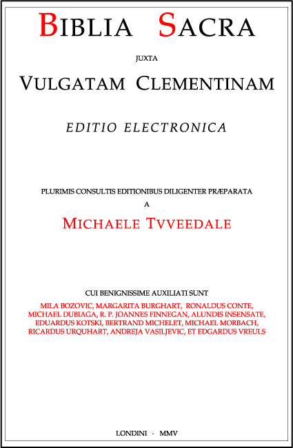

The Bishops' Conference of England and Wales gives its
approval
to the publication of Biblia Sacra juxta Vulgatam
Clementinam.
Published with approbation. CBCEW, 9th
January 2006.
Index
- Præfatio hujus editionis
- Decreta Concilii Tridentini
- Constitutio Clementis VIII
- Præfatio ad lectorem officialis
Præfatio hujus editionis
Clementis Papæ VIII nomen casu Vulgatæ adhæret. Hæc enim sanctarum Scripturarum editio, cum Sixto V regnante patrata fuisset, illo mortuo tandem sub pontificatu Clementis publicata est. Attamen vere decet ut iste Clemens, cum sit institutorum Concilii Tridentini æmuli exemplar, hoc bonum ejusdem Synodus fructum perficiat.
Sapientissimo fretus consilio S. Philippi Nerii, Sancti Spiritus caritate exæstuantis, ad ecclesiasticam disciplinam reparandam, et errores corruptelasque exstirpandas, indefesse laboravit ; et pro Ecclesiæ libertate acriter pugnavit. Tantus autem Clemens fidem catholicam tutus est opere et sermone, quantus et ipsius Vulgata revelationem Dei ab imminentibus periculis custodivit.
Hieronymi enim Doctoris maximi ex lingua hebræa translatione, ita per nongentos annos fruiti sunt doctissimi Ecclesiæ filii, ut ceteræ translationes latinæ pene evanuissent : illius autem innumerabilibus vicibus descriptæ, « tot fuisse exemplaria, quot codices ». Quando ergo Lutherus flagitiosa rebellione ab Ecclesia descivit, hac confusione abusus est ut verba Evangelii corrumperet, et suam falsam doctrinam defenderet. Quam ob causam opus erat ut authentica divinarum Scripturarum editio, diligenter emendata atque castigata, imprimeretur cum plena Apostolicæ Sedis auctoritate ; sacrosancta itaque Tridentina Synodus, Spiritu Sancto gubernante, hoc jussit, et ab ea jussum, a Clemente VIII est consummatum.
Porro XX sæculo incipiente, antiquissimis jam alteris manuscriptis aliunde inventis, ut Bibliæ editionem puram accuratamque Ecclesia semper haberet sollicitus, Sanctus Pius X Commissioni Pontificiæ de re biblica mandavit ut pristinam Hieronymi versionem, quantum fieri potuit, componeret. Primo Card. Gasquet, deinde D. Henrico Quentin, hoc onus delegatum est. Novissime, defunctis illis, Abbatia Pontificia S. Hieronymi a Pio XI Romæ fundata est, ut monachi Benedictini artis criticæ peritissimi ibi opus emolirentur. Singulis deinceps annuentibus Papis, minutim sancti libri emittebantur, et postremo anno salutis MCMXCV Biblia tota perfecta est.
Interim, eheu, interveniebant eventus infelices apud Ecclesiam. S. Pius X voluerat constabiliri translationem pristinam S. Hieronymi ut exinde confectura esset Vulgata ad usum Ecclesiæ quam accuratissime repurgata ; sed illius voluntatem parvipendentes, malebant viri tumidi translationem novam secundum gustus proprios facere, interpretationem vero Hieronymi negligere omnino. Quin etiam ætate nostra, errores illi pessimi, quos idem Pius vehementissime condemnavit, Ecclesiam Dei aperte infestant, et Lutherus dimidium errorum coæqualum nostrorum non cogitavit. Oportet nos igitur Vulgatam Clementinam fideliter amplexari donec, omnibus instauratis in Christo, Pii X propositum demum efficiatur.
Scribebam Londini, in festo D. N. J. C. Regis, 31 Octobris 2004.
Ex Concilio Tridentino, sess. 4 (8 aprilis 1546)
Decretum de canonicis Scripturis
Sacrosancta œcumenica et generalis Tridentina Synodus, in Spiritu Sancto legitime congregata, præsidentibus in ea eisdem tribus Apostolicæ Sedis legatis, hoc sibi perpetuo ante oculos proponens, ut, sublatis erroribus, puritas ipsa Evangelii in Ecclesia conservetur : quod promissum ante per prophetas in Scripturis sanctis, Dominus noster Jesus Christus, Dei Filius, proprio ore primum promulgavit, deinde per suos apostolos, tamquam fontem omnis et salutaris veritatis et morum disciplinæ, omni creaturæ prædicari jussit : perspiciensque hanc veritatem et disciplinam contineri in libris scriptis et sine scripto traditionibus, quæ ab ipsius Christi ore ab apostolis acceptæ, aut ab ipsis apostolis Spiritu Sancto dictante, quasi per manus traditæ, ad nos usque pervenerunt : orthodoxorum Patrum exempla secuta, omnes libros tam Veteris quam Novi Testamenti, cum utriusque unus Deus sit auctor, nec non traditiones ipsas, tum ad fidem, tum ad mores pertinentes, tamquam vel oretenus a Christo, vel a Spiritu Sancto dictatas, et continua successione in Ecclesia catholica conservatas, pari pietatis affectu ac reverentia suscipit ac veneratur.
Sacrorum vero librorum indicem huic decreto ascribendum censuit, ne cui dubitatio suboriri possit, quinam sint, qui ab ipsa Synodo suscipiuntur. Sunt vero infrascripti :
Testamenti Veteris : quinque Moysi, id est Genesis, Exodus, Leviticus, Numeri, Deuteronomium ; Josue, Judicum, Ruth, quatuor Regum, duo Paralipomenon, Esdræ primus et secundus, qui dicitur Nehemias, Tobias, Judith, Esther, Job, Psalterium Davidicum centum quinquaginta psalmorum, Parabolæ, Ecclesiastes, Canticum Canticorum, Sapientia, Ecclesiasticus, Isaias, Jeremias cum Baruch, Ezechiel, Daniel, duodecim prophetæ minores, id est : Osee, Joël, Amos, Abdias, Jonas, Michæas, Nahum, Habacuc, Sophonias, Aggæus, Zacharias, Malachias ; duo Machabæorum, primus et secundus.
Testamenti Novi : quatuor Evangelia, secundum Matthæum, Marcum, Lucam, Joannem ; Actus Apostolorum a Luca Evangelista conscripti ; quatuordecim epistolæ Pauli Apostoli : ad Romanos, duæ ad Corinthios, ad Galatas, ad Ephesios, ad Philippenses, ad Colossenses, duæ ad Thessalonicenses, duæ ad Timotheum, ad Titum, ad Philemonem, ad Hebræos ; Petri Apostoli duæ ; Joannis Apostoli tres ; Jacobi Apostoli una ; Judæ Apostoli una et Apocalypsis Joannis Apostoli.
Si quis autem libros ipsos integros cum omnibus suis partibus, prout in Ecclesia catholica legi consueverunt, et in veteri Vulgata latina editione habentur, pro sacris et canonicis non susceperit, et traditiones prædictas sciens et prudens contempserit, anathema sit.
Decretum de editione et usu sacrorum librorum
Insuper eadem sacrosancta Synodus, considerans non parum utilitatis accedere posse Ecclesiæ Dei, si ex omnibus latinis editionibus, quæ circumferuntur sacrorum librorum, quæ nam pro authentica habenda sit, innotescat : statuit et declarat, ut hæc ipsa vetus et Vulgata editio, quæ longo tot sæculorum usu in ipsa Ecclesia probata est, in publicis lectionibus, disputationibus, prædicationibus et expositionibus pro authentica habeatur, ut nemo illam rejicere quovis prætextu audeat vel præsumat.
Præterea ad coërcenda petulantia ingenia decernit, ut nemo, suæ prudentiæ innixus, in rebus fidei et morum ad ædificationem doctrinæ christianæ pertinentium, sacram Scripturam ad suos sensus contorquens, contra eum sensum, quem tenuit et tenet sancta mater Ecclesia, cujus est judicare de vero sensu et interpretatione Scripturarum sanctarum, aut etiam contra unanimen consensum Patrum, ipsam Scripturam sacram interpretari audeat, etiamsi hujusmodi interpretationes nullo umquam tempore in lucem edendæ forent. Qui contravenerint, per Ordinarios declarentur, et pœnis a jure statutis puniantur.
Sed et impressoribus modum in hac parte, ut par est, imponere volens, qui jam sine modo, hoc est putantes sibi licere, quidquid libet, sine licentia superiorum ecclesiasticorum, ipsos sacræ Scripturæ libros, et super illis annotationes et expositiones quorumlibet indifferenter, sæpe tacito, sæpe etiam ementito prelo, et quod gravius est, sine nomine auctoris imprimunt, alibi etiam impressos libros hujusmodi temere venales habent : decernit et statuit, ut posthac sacra Scriptura, potissimum vero hæc ipsa vetus et Vulgata editio, quam emendatissime imprimatur, nullique liceat imprimere, vel imprimi facere, quosvis libros de rebus sacris sine nomine auctoris, neque illos in futurum vendere, aut etiam apud se retinere, nisi primum examinati probatique fuerint ab Ordinario, sub pœna anathematis et pecuniæ in canone Concilii novissimi Lateranensis apposita. Et si regulares fuerint, ultra examinationem et probationem hujusmodi, licentiam quoque a suis superioribus impetrare teneantur, recognitis per eos libris, juxta formam suarum ordinationum. Qui autem scripto eos communicant, vel evulgant, nisi antea examinati probatique fuerint, eisdem pœnis subjaceant, quibus impressores. Et qui eos habuerint vel legerint, nisi prodiderint auctorem, pro auctoribus habeantur. Ipsa vero hujusmodi librorum probatio in scriptis detur, atque ideo in fronte libri vel scripti vel impressi authentice appareat ; idque totum, hoc est, et probatio et examen, gratis fiat, ut probanda probentur et reprobentur improbanda.
Post hæc temeritatem illam reprimere volens, qua ad profana quæque convertuntur et torquentur verba et sententiæ sacræ Scripturæ, ad scurrilia scilicet, fabulosa, vana, adulationes, detractiones, superstitiones, impias et diabolicas incantationes, divinationes, sortes, libellos etiam famosos, mandat et præcipit, ad tollendam hujusmodi irreverentiam et contemptum, et ne de cetero quisquam quomodolibet verba Scripturæ sacræ ad hæc et similia audeat usurpare, ut omnes hujus generis homines, temeratores et violatores verbi Dei, juris et arbitrii pœnis per Episcopos coërceantur.
Clemens Papa VIII ad perpetuam rei memoriam
Cum sacrorum Bibliorum Vulgatæ editionis textus summis laboribus ac vigiliis restitutus, et quam accuratissime mendis expurgatus, benedicente Domino, ex nostra typographia Vaticana in lucem prodeat ; Nos, ut in posterum idem textus incorruptus, ut decet, conservetur, opportune providere volentes, auctoritate apostolica, tenore præsentium districtius inhibemus, ne intra decem annos a data præsentium numerandos, tam citra quam ultra montes, alibi quam in nostra Vaticana typographia, a quoquam imprimatur. Elapso autem præ fato decennio, eam cautionem adhiberi præcipimus, ut nemo hanc sanctarum Scripturarum editionem typis mandare præsumat, nisi habito prius exemplari in typographia Vaticana excuso : cujus exemplaris forma, ne minima quidem particula de textu mutata, addita, vel ab eo detracta, nisi aliquid occurrat, quod typographicæ incuriæ manifeste ascribendum sit, inviolabiliter observetur.
Si quis vero typographus in quibuscumque regnis, civitatibus, provinciis, et locis tam nostræ et S. R. E. ditioni in temporalibus subjectis, quam non subjectis, hanc eamdem sacrarum Scripturarum editionem intra decennium præ dictum quoquo modo, elapso autem decennio, aliter quam juxta hujusmodi exemplar, ut præfertur, imprimere, vendere, venales habere, aut alias edere vel evulgare : aut si quis bibliopola a se vel ab aliis quibusvis, post datam præsentium, hujus editionis impressos libros, seu imprimendos a præfato restituto et correcto textu in aliquo discrepantes, seu ab alio, quam a typographo Vaticano, intra decennium excusos, pariter vendere, venales proponere, vel evulgare præsumpserit, ultra amissionem omnium librorum, et alias arbitrio nostro infligendas pœnas temporales, etiam majoris excommunicationis sententiam eo ipso incurrat : a qua nisi a Romano Pontifice, præterquam in mortis articulo constitutus, absolvi non possit.
Mandamus itaque universis et singulis, Patriarchis, Archiepiscopis, Episcopis, ceterisque Ecclesiarum et locorum, etiam regularium Prælatis, ut præ sentes litteras in suis quisque Ecclesiis et jurisdictionibus ab omnibus inviolate perpetuo observari curent ac faciant. Contradictores per censuras ecclesiasticas, aliaque opportuna juris et facti remedia, appellatione postposita, compescendo, invocato etiam ad hoc, si opus fuerit, auxilio brachii sæcularis ; non obstantibus constitutionibus, et ordinationibus apostolicis, ac in generalibus, provincialibus, vel synodalibus Conciliis editis generalibus, vel specialibus, ac quarumcumque Ecclesiarum, Ordinum, Congregationum, Collegiorum atque Universitatum, etiam studiorum generalium juramento, confirmatione apostolica, vel quavis firmitate alia roboratis, statutis, et consuetudinibus, ac privilegiis, indultis, ac litteris apostolicis in contrarium quomodocumque emanatis, et emanandis : quibus omnibus ad hunc effectum latissime derogamus, ac derogatum esse decernimus. Volumus autem, ut præsentium trans sumptis etiam in ipsis voluminibus impressis eadem, in judicio et extra, fides ubique adhibeatur, quæ ipsis præsentibus adhiberetur, si forent exhibitæ, vel ostensæ.
Datum Romæ, apud Sanctum Petrum sub Annulo Piscatoris, die IX novembris MDXCII, Pont. Nostri anno I.
Præfatio ad lectorem (ex editione vaticana anni 1592)
In multis magnisque beneficiis, quæ per sacram Tridentinam Synodum Ecclesiæ suæ Deus contulit, id in primis numerandum videtur, quod inter tot latinas editiones divinarum Scripturarum, solam veterem ac Vulgatam, quæ longo tot sæculorum usu in Ecclesia probata fuerat, gravissimo Decreto authenticam declaravit. Nam, ut illud omittamus, quod ex recentibus editionibus non paucæ ad hæreses hujus temporis confirmandas licenter detortæ videbantur : ipsa certe tanta versionum varietas, atque diversitas magnam in Ecclesia Dei confusionem parere potuisset. Jam enim hac nostra ætate illud fere evenisse constat, quod sanctus Hieronymus tempore suo accidisse testatus est, tot scilicet fuisse exemplaria, quot codices ; cum unusquisque pro arbitrio suo adderet, vel detraheret.
Hujus autem veteris ac Vulgatæ editionis tanta semper fuit auctoritas, tamque excellens præstantia, ut eam ceteris omnibus latinis editionibus longe anteferendam esse, apud æquos judices in dubium revocari non posset. Qui namque in ea libri continentur (ut a majoribus nostris quasi per manus traditum nobis est) partim ex sancti Hieronymi translatione, vel emendatione suscepti sunt ; partim retenti ex antiquissima quadam editione latina, quam sanctus Hieronymus communem et Vulgatam, sanctus Augustinus Italam, sanctus Gregorius Veterem translationem appellat.
Ac de Veteris quidem hujus, sive Italæ editionis sinceritate atque præ stantia præclarum sancti Augustini testimonium exstat in secundo libro De doctrina christiana, ubi latinis omnibus editionibus, quæ tunc plurimæ circumferebantur, Italam præferendam censuit, quod esset, ut ipse loquitur, verborum tenacior cum perspicuitate sententiæ. De sancto vero Hieronymo multa exstant veterum Patrum egregia testimonia : eum enim sanctus Augustinus hominem doctissimum, ac trium linguarum peritissimum vocat, atque ejus translationem ipsorum quoque hebræorum testimonio veracem esse confirmat. Eumdem sanctus Gregorius ita prædicat, ut ejus translationem, quam novam appellat, ex hebræo eloquio cuncta verius transfudisse dicat : atque idcirco dignissimam esse, cui fides in omnibus habeatur. Sanctus autem Isidorus non uno in loco Hieronymianam versionem ceteris omnibus anteponit, eamque ab ecclesiis christianis communiter recipi ac probari affirmat, quod sit in verbis clarior, et veracior in sententiis. Sophronius quoque, vir eruditissimus, sancti Hieronymi translationem non latinis modo, sed etiam græcis valde probari animadvertens, tanti eam fecit, ut psalterium et prophetas ex Hieronymi versione in græcum eleganti sermone transtulerit. Porro qui secuti sunt, viri doctissimi, Remigius, Beda, Rabanus, Haymo, Anselmus, Petrus Damiani, Richardus, Hugo, Bernardus, Rupertus, Petrus Lombardus, Alexander, Albertus, Thomas, Bonaventura, ceterique omnes, qui his nongentis annis in Ecclesia floruerunt, sancti Hieronymi versione ita sunt usi, ut ceteræ, quæ pene innumerabiles erant, quasi lapsæ de manibus theologorum, penitus obsoleverint. Quare non immerito catholica Ecclesia sanctum Hieronymum doctorem maximum, atque ad Scripturas sacras interpretandas divinitus excitatum ita celebrat, ut jam difficile non sit illorum omnium damnare judicium, qui vel tam eximii doctoris lucubrationibus non acquiescunt, vel etiam meliora, aut certe paria præstare se posse confidunt.
Ceterum ne tam fidelis translatio, tamque in omnes partes Ecclesiæ utilis, vel injuria temporum, vel impressorum incuria, vel temere emendantium audacia, ulla ex parte corrumperetur, eadem sacrosancta Synodus Tridentina illud Decreto suo sapienter adjecit, ut hæc ipsa vetus ac Vulgata editio emendatissime, quoad fieri posset, imprimeretur : neque ulli liceret eam sine facultate et approbatione superiorum excudere. Quo Decreto simul typographorum temeritati ac licentiæ modum imposuit, et pastorum Ecclesiæ in tanto bono quam diligentissime retinendo, et conservando, vigilantiam, atque industriam excitavit.
Et quamvis insignium Academiarum Theologi in editione Vulgata pristino suo nitori restituenda magna cum laude laboraverint ; quia tamen in tanta re nulla potest esse nimia diligentia, et codices manuscripti complures et vetustiores Summi Pontificis jussu conquisiti, atque in Urbem advecti erant ; et demum, quoniam executio generalium Conciliorum, et ipsa Scripturarum integritas ac puritas ad curam Apostolicæ Sedis potissimum pertinere cognoscitur ; ideo Pius IV Pontifex Maximus pro sua in omnes Ecclesiæ partes incredibili vigilantia, lectissimis aliquot sanctæ romanæ Ecclesiæ Cardinalibus, aliisque tum Sacrarum litterarum, tum variarum linguarum peritissimis viris, eam provinciam demandavit, ut Vulgatam editionem latinam, adhibitis antiquissimis codicibus manuscriptis, inspectis quoque hebraicis, græcisque bibliorum fontibus ; consultis denique veterum Patrum commentariis, accuratissime castigarent. Quod itidem institutum Pius V prosecutus est. Verum conventum illum ob varias, gravissimasque Sedis Apostolicæ occupationes jamdudum intermissum, Sixtus V divina providentia ad summum Sacerdotium evocatus, ardentissimo studio revocavit, et opus tandem confectum typis mandari jussit. Quod cum jam esset excusum, et ut in lucem emitteretur, idem Pontifex operam daret, animadvertens non pauca in sacra Biblia præli vitio irrepsisse, quæ iterata diligentia indigere viderentur, totum opus sub incudem revocandum censuit atque decrevit. Id vero cum morte præventus præ stare non potuisset, Gregorius XIV qui, post Urbani VII duodecim dierum Pontificatum, Sixto successerat, ejus animi intentionem executus perficere aggressus est, amplissimis aliquot Cardinalibus, aliisque doctissimis viris ad hoc iterum deputatis. Sed eo quoque, et qui illi successit, Innocentio IX brevissimo tempore de hac luce subtractis ; tandem sub initium Pontificatus Clementis VIII qui nunc Ecclesiæ universæ gubernacula tenet, opus, in quod Sixtus V intenderat, Deo bene juvante perfectum est.
Accipe igitur, christiane lector, eodem Clemente Summo Pontifice annuente, ex Vaticana typographia veterem ac Vulgatam sacræ Scripturæ editionem, quanta fieri potuit diligentia castigatam : quam quidem sicut omnibus numeris absolutam, pro humana imbecillitate affirmare difficile est, ita ceteris omnibus, quæ ad hanc usque diem prodierunt, emendatiorem, purioremque esse, minime dubitandum. Et vero quamvis in hac Bibliorum recognitione in codicibus manuscriptis, hebræis, græcisque fontibus, et ipsis veterum Patrum commentariis conferendis non mediocre studium adhibitum fuerit ; in hac tamen pervulgata lectione sicut nonnulla consulto mutata, ita etiam alia, quæ mutanda videbantur, consulto immutata relicta sunt ; tum quod ita faciendum esse ad offensionem populorum vitandam sanctus Hieronymus non semel admonuit : tum quod facile fieri posse credendum est, ut majores nostri, qui ex hebræis, et græcis latina fecerunt, copiam meliorum, et emendatiorum librorum habuerint, quam ii, qui post illorum ætatem ad nos pervenerunt, qui fortasse tam longo tempore identidem describendo minus puri, atque integri evaserunt ; tum denique quia sacræ Congregationi amplissimorum Cardinalium, aliisque eruditissimis viris ad hoc opus a Sede Apostolica delectis propositum non fuit, novam aliquam editionem cudere, vel antiquum interpretem ulla ex parte corrigere, vel emendare ; sed ipsam veterem, ac Vulgatam editionem latinam a mendis veterum librariorum, necnon pravarum emendationum erroribus repurgatam, suæ pristinæ integritati, ac puritati, quoad ejus fieri potuit, restituere ; eaque restituta, ut quam emendatissime imprimeretur juxta Concilii œcumenici Decretum pro viribus operam dare.
Porro in hac editione nihil non canonicum, nihil ascititium, nihil extraneum apponere visum est : atque ea causa fuit, cur liber tertius et quartus Esdræ inscripti, quos inter canonicos libros sacra Tridentina Synodus non annumeravit, ipsa etiam Manassæ regis Oratio, quæ neque hebraice, neque græce quidem exstat, neque in manuscriptis antiquioribus invenitur, neque pars est ullius canonici libri, extra canonicæ Scripturæ seriem posita sint : et nullæ ad marginem concordantiæ (quæ posthac inibi apponi non prohibentur), nullæ notæ, nullæ variæ lectiones, nullæ denique præfationes, nulla argumenta ad librorum initia conspiciantur.
Sed sicut Apostolica Sedes industriam eorum non damnat, qui concordantias locorum, varias lectiones, præfationes sancti Hieronymi, et alia id genus in aliis editionibus inseruerunt ; ita quoque non prohibet, quin alio genere caracteris in hac ipsa Vaticana editione ejusmodi adjumenta pro studiosorum commoditate, atque utilitate in posterum adjiciantur ; ita tamen, ut lectiones variæ ad marginem ipsius textus minime annotentur.